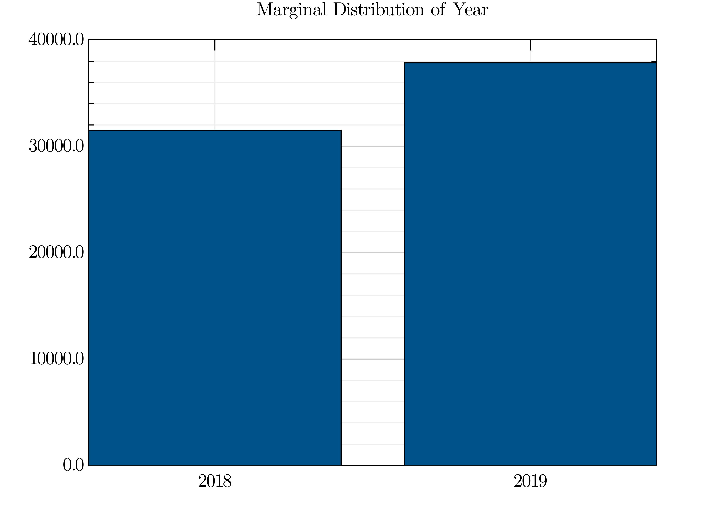
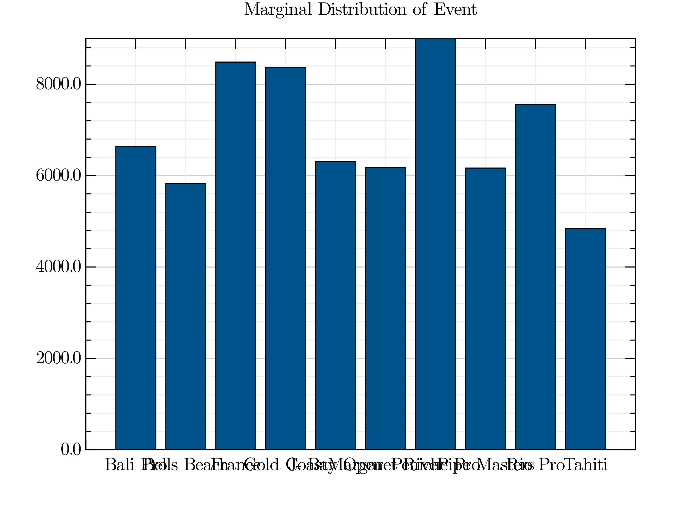
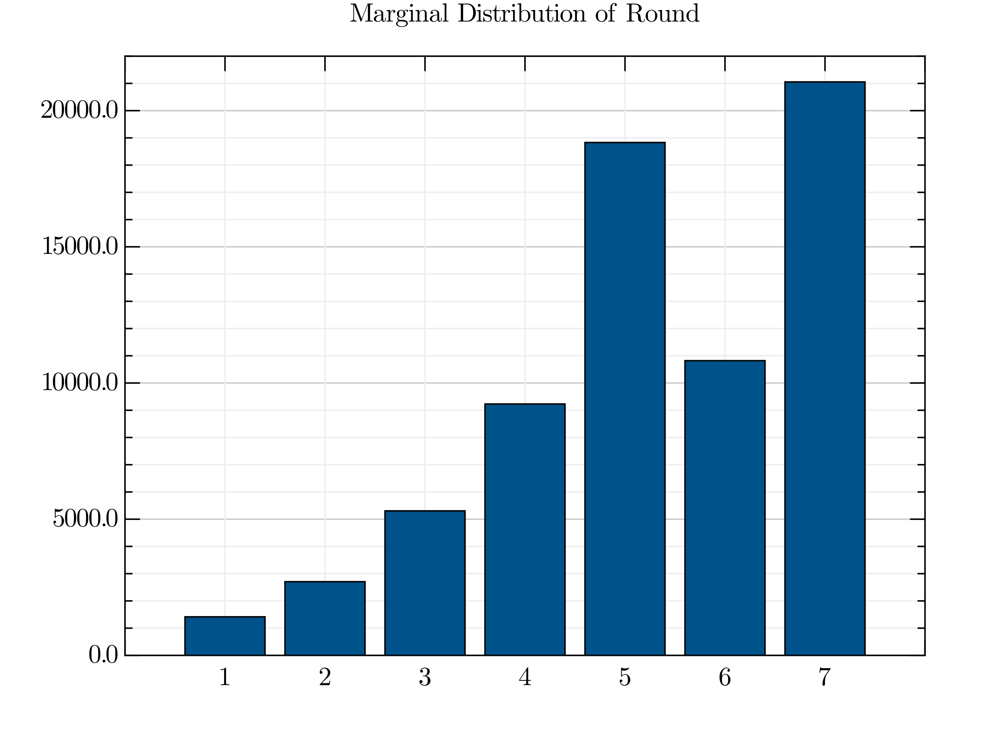
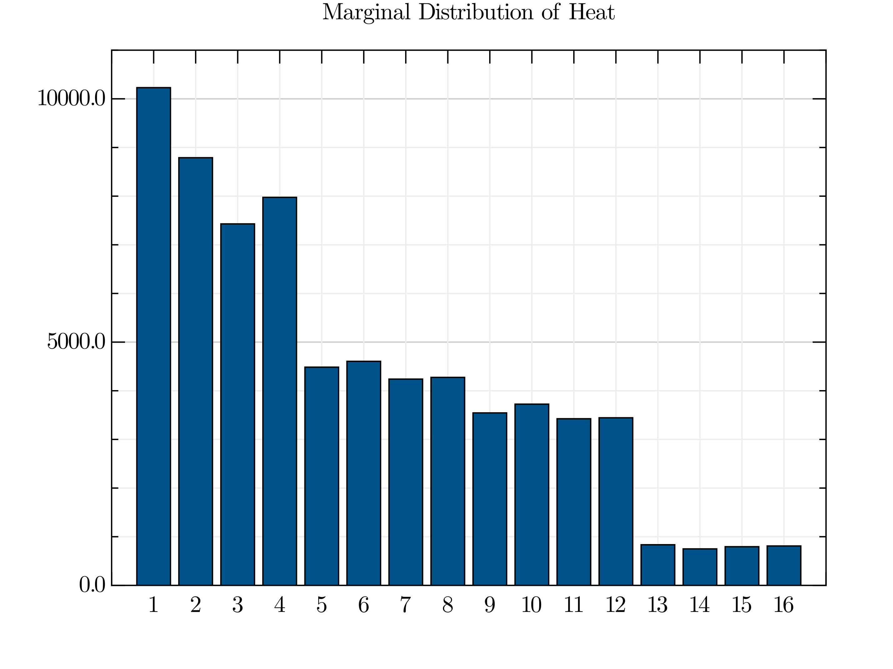
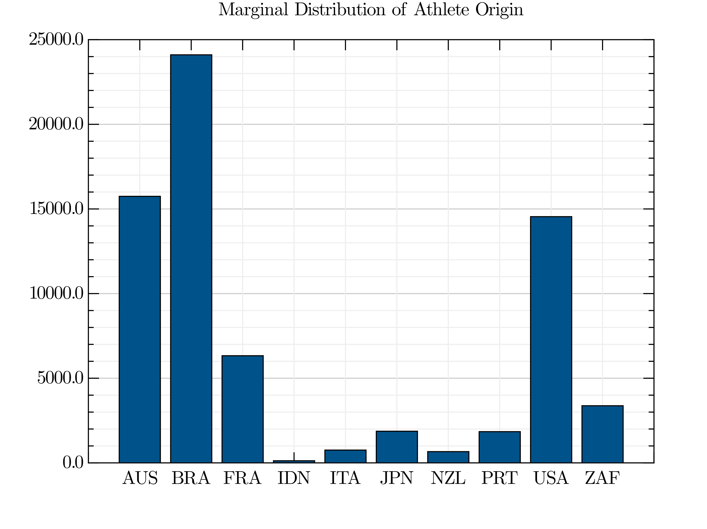
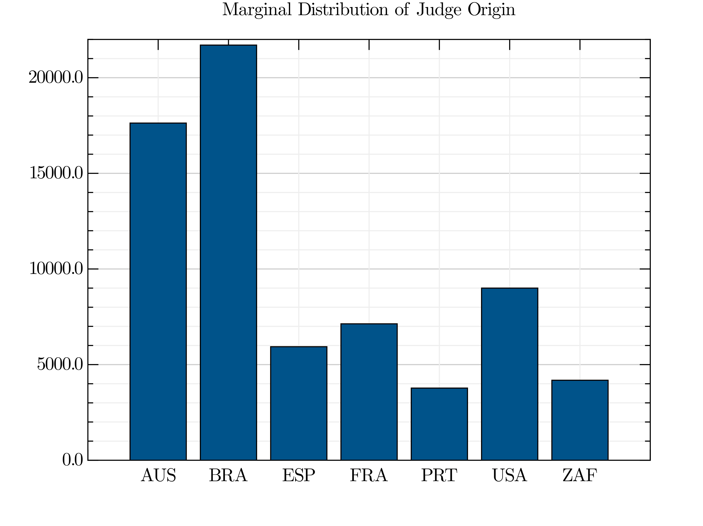
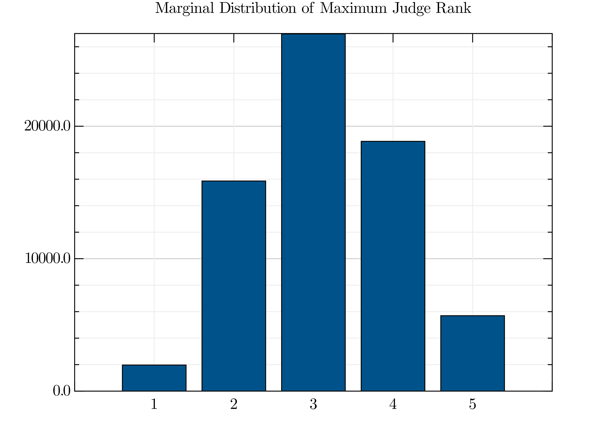
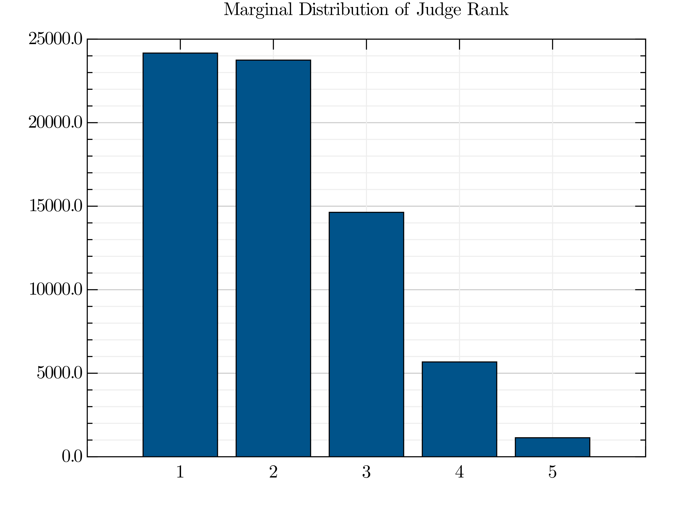
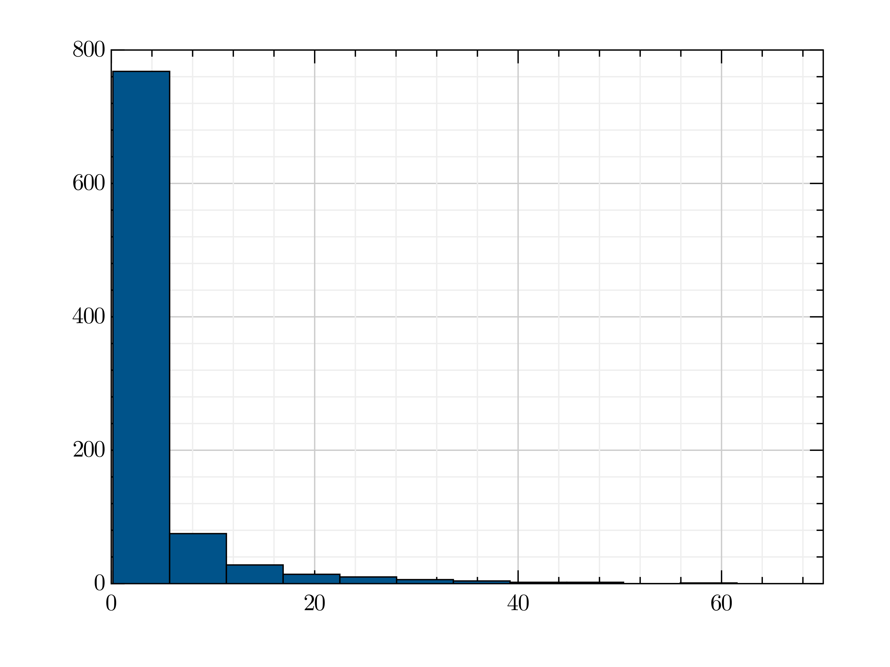
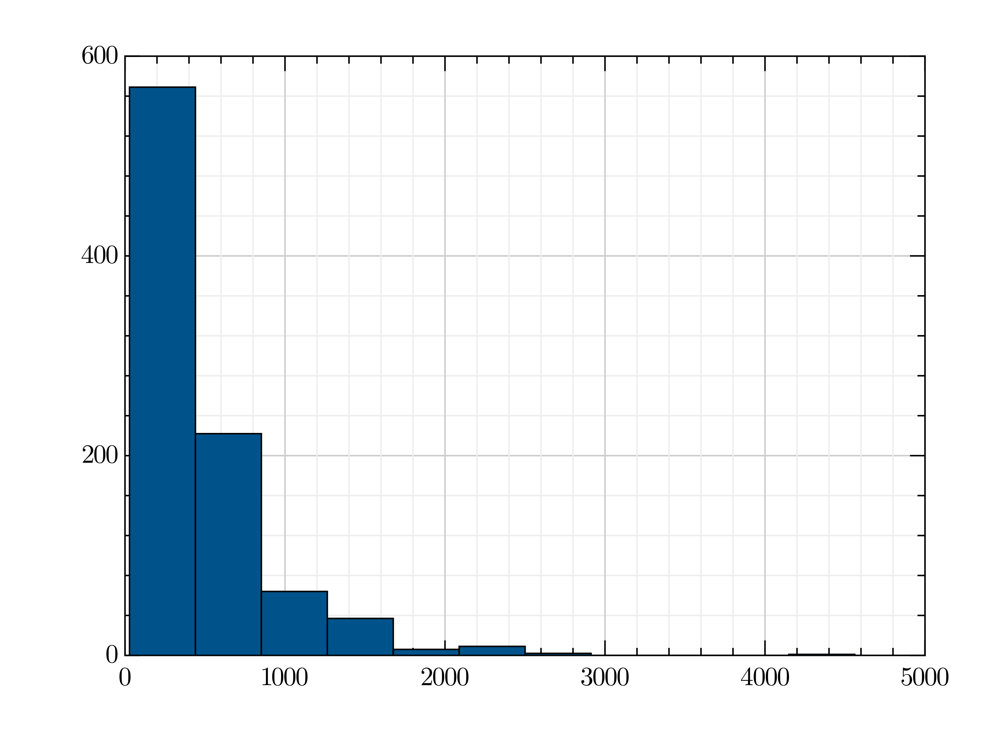

Some Preliminaries:
using GRUtils # for visualization using Statistics # for general purpose stats things using StatsBase # Currently whats being used? include("SimplifyComp.jl") include("toolkit/SymGrpAndReps.jl")
AltOp (generic function with 2 methods)
Here we read in the raw data. I have elected to restrict our attention to 2018 and 2019 because those are the most complete years. See Table: Year | Waves | Waves w/ 0 Judge Origins Listed | Waves w/ 5 Judge Origins Listed | Total Number of Judge Origins | Waves w/ 3 Sub Scores Listed | Waves w/ 5 Sub Scores Listed | Total number of Judge Scores ––-|––-|––-|––-|––-|––-|––-|––- 2017 | 7328 | 5210 | 2118 | 10590 | 299 | 7029 | 36042 2018 | 6639 | 336 | 6303 | 31515 | 0 | 6639 | 33195 2019 | 7648 | 79 | 7569 | 37845 | 0 | 7648 | 38240 All | 21615 | 5625 | 15990 | 79950 | 299 | 21316 | 107477
Does nationality influence the World Surf League Championship Tour? If so, how?, to what degree?, and does this vary depending on nationality?
The World Surf League (WSL) is the most prominent organizer of international surf compeitions. Each year the WSL organizes a variety of "tours" which include Mens and Womens versions of Big Wave events, the "Longboard Tour", the "Qualifying Series", and the "Championship Tour" (CT).
Each year, the 32 highest ranked (shortboard) surfers are invited to participate in the "Championship Tour" (CT), which constists of 11 surf compeitions in 7 different countries. Each competition has 7 rounds, each consisting of 1 to 16 heats, and each heat has 2 to 3 surfers. Within a heat, a surfer may attempt to ride any number of waves, but their final heat score is the sum of their two highest scoring waves. The surfer with the highest heat score places 1st in the heat, the surfer with the next highest heat score places 2nd in the heat. In some rounds, heats consist of 3 surfers, in which case the surfer with the third highest heat score will place 3rd in the heat. Each round has a rule that determines which surfers advance, and what (round,heat) they advance to. Surfers that do not advance "exit" the event, and are given some number of points (the closer the exit is to the compeitions final round, the higher the amount of points).
In any given heat, there is judging panel comprised of 5 judges. Anytime a surfer attempts to ride a wave, each judge analyzes the surfer's ride with respect to the following criteria and write down a score:
Commitment and degree of difficulty
Innovative and progressive maneuvers
Combination of major maneuvers
Variety of maneuvers
Speed, power, and flow
Note: that Different elements of this list may be emphasized more or less depending on the location, conditions, and changes of conditions. (Chapter 13 Article 182) Additionally, the General Judging Rules (Chapter 13; Article 183; Section 1,2) state that judges should be visually separated, should not discuss scores, and may not change their scores.
Though there are 5 judges and 5 scores, the score a surfer receives, called the "wave score", is the trimmed mean of the scores given by the 5 judges. This is very important information and particularly interesting because it distinguishes the existence of biased judges from the effect of biased judging (if it exists).
The role of judges is not limited to the five judges on a panel. For each Men's CT event, there is 1 international Head Judge, 7 international judges, and 1 international priority Judge (Chapter 13, Article 179.01). And Chapter 13, article 179.17 states that "At CT Events, the number of judges from any one regional area is limited to 3". For each heat, the WSL Head Judge must assure there are at least 5 judges on the panel for each heat and that they are a subset of the 7 International Judges and 1 International Head Judge (Chapter 13, Article 179.13).
5 judges are selected from a pool of 8 judges to form a panel for a heat. During that heat, when a surfer rides a wave, each judge independently observes the ride and writes down a score (based on some broadly defined criteria), which is some number in {0.0, 0.1, 0.2, ..., 9.8, 9.9, 10.0}.
We collected some incredibly rich data on surf compeitions from the 2017, 2018, and 2019 seasons of the Mens World Championship Tour (WCT). Each year the World Surf League (WCT) holds 10 to 11 surf competitions, which are called "events". While the format of events have changed slightly between the 2017 and 2019 seasons, they are all very similar. Each event consists of 7 rounds, and within each round there are some number of heats. A heat is the level at which intra-athlete competition takes place and may consist of 2 or 3 surfers. Throughout a timed heat (usually between 22 and 35 minutes), each athlete may surf any number of waves and their "heat score" is the sum of the scores of their two highest scoring waves.
Our goal is to determine if judges have a tendency to give higher scores to surfers that share their same nationality.
The straight forward approach is to test the differences in means between judges with the same nationality as the surfer and those with a different nationality. I.e. Test H₀: Mean(Match Scores) - Mean(No Match Scores) = 0 H₁: Mean(Match Scores) - Mean(No Match Scores) != 0
HasMatch = filter(x->x.I_match==true, last.(WAVES) ) DiffInMeans = map(x->mean(x.labeledPanelBinary[:Match]) - mean(x.labeledPanelBinary[:NoMatch]), HasMatch) ttest(X) = mean(X) / (std(X)/sqrt(length(X))) println( ttest(DiffInMeans) )
6.71160420326186
The difference of mean(DiffInMeans) is significant. However, the distribution of the differences in means is less compelling.
savefig("visuals/DistOfDiffInMeans.jl", histogram(DiffInMeans,title="Distribution of Differences in Means") )
!(visuals/DistOfDiffInMeans.png)
We may carry out this process for each country: Note C = :AUS, :BRA, :FRA, :PRT, :USA, :ZAF
B = [:Match, :NoMatch] C = sort(unique(map(x->x.athOrig, HasMatch))) function diffInMeansDist(c::ORIG) I = findall(x->x.athOrig==c, HasMatch) t = ttest( DiffInMeans[I] ) savefig( "visuals/DistOfDiffInMeansFor$(c).jl", histogram(DiffInMeans[I],title="Difference in Means where C=$c (n=$(length(I)) and t=$t)") ) return t end for c in C diffInMeansDist(c) end
And we find that differences in means between Matching and Non-matching judges, conditional on a Nationality is signifigant for AUS, BRA, FRA, USA, ZAF. Though we will use the term "matching judge(s)" throughout the paper, it is important to keep in mind that it is the Athlete's origin which determines whether a judge is a "matching judge" or a "non-matching judge".
Question: What is the definition of a panel? What type of data is it? For any given heat, there are 5 judges on the judging panel. Anytime a surfer rides a wave, each of them observes the way What does a panel look like? A lot of very different things that may seem very similar BUT ARE NOT. For example:
Panels = map(x->x.panel,last.(WAVES)) display(Panels[1]) display(Panels[3]) display(Panels[5])
5-element Array{Pair{Float16,Main.##WeaveSandBox#253.ORIG},1}:
0.3 => Main.##WeaveSandBox#253.BRA
0.3 => Main.##WeaveSandBox#253.ZAF
0.5 => Main.##WeaveSandBox#253.AUS
0.5 => Main.##WeaveSandBox#253.ESP
0.5 => Main.##WeaveSandBox#253.USA
5-element Array{Pair{Float16,Main.##WeaveSandBox#253.ORIG},1}:
1.0 => Main.##WeaveSandBox#253.BRA
1.0 => Main.##WeaveSandBox#253.USA
1.0 => Main.##WeaveSandBox#253.ZAF
1.5 => Main.##WeaveSandBox#253.AUS
1.5 => Main.##WeaveSandBox#253.ESP
5-element Array{Pair{Float16,Main.##WeaveSandBox#253.ORIG},1}:
5.5 => Main.##WeaveSandBox#253.AUS
5.5 => Main.##WeaveSandBox#253.BRA
6.0 => Main.##WeaveSandBox#253.ESP
6.0 => Main.##WeaveSandBox#253.USA
6.0 => Main.##WeaveSandBox#253.ZAF
We have lots of missing Judge Origins from panels in the 2017 World Surf League season so we will omit the 2017 season ... for now (This begs an intersting question which we should return to later).
We have constructed a multidimensional array, aka an m-way, cross classified, contingency table. We have m classification factors:
WSL Season
Event
Round
Heat
Ahtlete Origin
Judge Origin
Size of Partition of Panel (Max Rank)
Rank of Judge
println("m = $(ndims(rnkData))") println(size(rnkData)) function marginalBarPlot(M::Array{T,N}, d::Integer) where {T,N} dIndex_(h::Integer) = [ i==d ? h : Colon() for i in 1:N] marginal_d = [sum( M[ dIndex_(h)... ] ) for h in 1:size(M)[d] ] savefig( "visuals/marginal_$(rnkDataVarNames[d]).png", barplot( map( String.(Symbol.(rnkData[d])) , marginal_d ) ) return marginal_d end for d in length(rnkDataVarNames) marginalBarPlot(rnkData, d) end
m = 8 (2, 10, 7, 16, 11, 7, 5, 5)
ERROR: syntax: missing comma or ) in argument list
       
The Symmetric Group on a set, $X$ is $S_X := Isomorphisms(X,X)$. When $|X|<\infty$,$S_X = \{ \tau :X\rightarrow X \mid Image(\tau) = X \} = \{\tau:X\rightarrow X \mid \{\tau(x) \mid x \in X\} = X \}$
$S_d := S_{\{ 1 ,\dots, d\}}.$
When G is a Group, and $\mathbb{F}$ is a Field, the Group Algebra of G over $F$, denoted $\mathbb{F}[G]$, is the space of formal linear combinations of elements of G. Elements of $\mathbb{F}[G]$ are of the form: $c_1 g_1 + \dots + c_n g_n = \sum^n_{i=1} c_i g_i$, where $c_i \in \mathbb{F}, g_i \in G$. Note that $i\neq j \implies g_i \neq g_j$ because G is a set of elements, so no element occurs with multiplicity. For example, $c_1 g + c_2 g \not\in \mathbb{F}[G]$ whereas $(c_1 + c_2)g \in \mathbb{F}[G]$.
$\mathbb{F}[S_d]$ is comprised on formal linear combinations of elements of $S_d$. This may be understood as two different ways:
There exists a function $a:S_n \rightarrow \mathbb{F}$ and $A := \sum_{\tau \in S_d} a(\tau) \tau \quad \in \mathbb{F}[S_n]$.
Or: $A = [ \pi_1 \dots \pi_{d!} ] \begin{bmatrix}a_{\pi_1} \\ \vdots \\ a_{\pi_{d!}} \end{bmatrix} = \sum_{\tau \in S_d } a_\tau \tau \in \mathbb{F} [S_d]$,where $\tau \in S_d, a_\tau \in \mathbb{F}$.
Addition in $\mathbb{F}[S_n]$ is defined by $A+B = (\sum_{\tau} a_\tau \tau) + (\sum_\tau b_\tau \tau) := \sum_\tau (a_\tau + b_\tau) \tau$
Scalar Multiplication in $\mathbb{F}[S_d]$ is $c(A) = c(\sum_{\tau} a_\tau \tau) = \sum_{\tau} ca_\tau \tau$.
Multiplication in $\mathbb{F}[S_d]$ is defined by: $A*B =(\sum_{\tau} a_\tau \tau)* (\sum_\pi b_\pi \pi) :=\sum_{\gamma \in S_d}(\sum_{\tau,\pi | \tau\pi=\gamma} a_\tau b_\pi) \gamma = \sum_{\gamma \in S_d}(\sum_{ \tau \in S_d} a_\tau b_{\tau^{-1}\gamma} ) \gamma$.
We should not over complicate $*$. The definition of $*$ may look odd, but it exactly the same as our basic understanding of multiplication: $(\sum_{ \tau} a_\tau\tau) *(\sum_{\pi } b_\pi \pi) = \sum_{ \tau} (a_\tau\tau) *(\sum_{\pi } b_\pi \pi) = \sum_{ \tau} \sum_{\pi } (a_\tau\tau) * (b_\pi \pi) = \sum_{ \tau}\sum_{\pi } a_\tau b_\pi \tau \pi =\sum_{\gamma \in S_d}(\sum_{ \tau,\pi | \tau\pi = \gamma } a_\tau b_\pi) \gamma =(\sum_{\tau} a_\tau \tau)* (\sum_\pi b_\pi \pi)$ Even though $(∑_{τ} a_τ τ) *(∑_{π} b_π π)$ is equal to the intuitive form, $∑_{τ}\sum_{π} a_τ b_π τπ$, the latter is not an element of the the group algebra because elements are repeated in the sum, hence our chosen definition. Also, $*$ merely extends multiplication in the Field,$\cdot: \mathbb{F} \times \mathbb{F} \rightarrow \mathbb{F}$, and the operation in the group, $∘$, by $a_τ τ * b_π π = a_τ⋅b_π τ∘π = a_τ b_π τπ$, where the last equality is simply notation-reduction.
A measure on $S_d$, is an element of the group algebra $\mathbb{C}[S_n]$. A measure on $S_d$, $F = ∑_{τ ∈ S_d} f_τ τ$, is a probability measure on $S_d$ if and only if $∀ τ ∈ S_d f_τ \geq 0$ and $∑_{τ ∈ S_d} f_τ = 1$.
A linear representation of a group G, is a group homomorphism, $\rho : (G,\circ) \rightarrow (GL(V),\cdot)$. A group homomorphism satisfies:
$∀ x,y ∈ G \quad ρ(x∘y) = ρ(x) \cdot ρ(y)$ where $\cdot$ is multiplication in $GL(V)$.
$ρ(e) = I$, where e is the identity element in $G$ and I is the identity element in $GL(V)$.
$∀ x ∈ G, ρ(x^{-1}) = ρ(x)^*$, where $^*$ denotes involution in $GL(V)$.
The representation of a measure F, is: $\hat{F} := ∑_{τ ∈ S_n} P(τ) ρ(τ)$. Note: This is sometimes called the Fourier transform at a representation, I avoid that lingo.
Convolution of two functions on $S_d$ is a binary operation $A * B := ∑_{τ ∈ S_n} a(τ) b(τ^{-1}g)$.
Note: $\widehat{A*B} = ∑_{γ} (A*B)(γ)ρ(γ) = ∑_{γ} ∑_{τ} a(γ τ^{-1})b(τ)\rho(γ ) = ∑_{τ} ∑_{γτ} a(γ τ τ^{-1})b(τ)ρ(γτ) = ∑_{τ} ∑_{γτ} a(γ)b(τ)ρ(γ)ρ(τ) = ∑_{τ} b(τ)ρ(τ) ∑_{γτ} a(γ)ρ(γ) = ∑_{τ} b(τ)ρ(τ) \hat{A} = \hat{A} ∑_{τ} b(τ)\rho(τ) = \hat{A} \cdot \hat{B}$
We take $ρ_d$ the permutation representation acting on the vector space $V := \mathbb{R}^d$ with basis indexed by $\{1,…,d\}$. So a typical element of V is of the form:
$\begin{pmatrix} a^1 \\ a^2 \\ \vdots \\ a^n \end{pmatrix} = \begin{pmatrix} a^1 \\ 0 \\ \vdots \\ 0 \end{pmatrix} + \begin{pmatrix} 0 \\ a^2 \\ \vdots \\ 0 \end{pmatrix} + \dots + \begin{pmatrix} 0 \\ \vdots \\ 0\\ a^n \end{pmatrix} = a^1\begin{pmatrix} 1 \\ 0 \\ \vdots \\ 0 \end{pmatrix} + a^2\begin{pmatrix} 0 \\ 1 \\ \vdots \\ 0 \end{pmatrix} + \dots + a^n\begin{pmatrix} 0 \\ \vdots \\ 0\\ 1\end{pmatrix} = a^1 e_1 + a^2 e_2 + \dots a^n e_n$
This could be rewritten as $∑_{i ∈ \{1,…,n\} } a^i e_i$. But remember, we are interested in functions that act on the basis.
Many authors call $*$ "convolution", however this terminology is superfluous.
One thing I could change:
instead giving every element of rth partition rank give them each:
{ Nᵣ + i for i in 1:n_i} where Nᵣ is Σʳnᵢ ... but then any answer we give loses meaning
I wonder: Mᵣ := max order for that wave B = 1{order(Jᵢ) = 1 } T = 1{order(Jᵢ) = Mᵣ } B ∪ T only really meaninful for Mᵣ>2
Wondering₁: if P(T | JUDorig==ATHorig ) = P( T | JUDorig != ATHorig ) Wondering₂: if Wondering₁ depends on [ ]orig Wondering₃: if P( B ∪ T | Mᵣ ) = 2/Mᵣ Wondering₄: if P(T | (JUDorig==ATH_orig,Mᵣ) ) = 1/Mᵣ
MATCH_ORIGS = sort(unique(map(x->x.athOrig,HasMatch))) GivenMatchByMᵣ = [ sum( [sum(rnkData[:,:,:,:,c,c,r,:]) for c in Int.(MATCH_ORIGS) ] ) for r in 1:5 ] println("Match conditional on Max Rank is:") GivenMatchByMᵣ TopGivenMatchByMᵣ = [ sum( [ sum(rnkData[:,:,:,:,c,c,r,1]) for c in Int.(MATCH_ORIGS)]) for r in 1:5 ] println("Judge has Max Rank given Match (by Max Rank)") TopGivenMatchByMᵣ D₁ = TopGivenMatchByMᵣ ./ GivenMatchByMᵣ
Match conditional on Max Rank is:
Judge has Max Rank given Match (by Max Rank)
5-element Array{Rational{Int64},1}:
1//1
1699//3419
1819//5942
288//1357
223//1209
We would expect:
E₁ = [1/r for r in 1:5]
5-element Array{Float64,1}:
1.0
0.5
0.3333333333333333
0.25
0.2
So we have:
χsq₁ = sum(GivenMatchByMᵣ)*sum( (D₁ .- E₁).^2 ./ E₁ )
137.795814443704
Now...
GivenMatchByMᵣandOrig = [ sum( rnkData[:,:,:,:,c,c,r,:] ) for r in 1:5, c in Int.(MATCH_ORIGS) ] println("Match conditional on Max Rank (rows) and Nationality (cols)") display(GivenMatchByMᵣandOrig) TopGivenMatchByMᵣandOrig = [ sum( rnkData[:,:,:,:,c,c,r,1] ) for r in 1:5, c in Int.(MATCH_ORIGS) ] println("Judge has Max Rank given Match (by Max Rank (rows) by Nationality (cols))") println(TopGivenMatchByMᵣandOrig) println(MATCH_ORIGS) D₂ = TopGivenMatchByMᵣandOrig ./ GivenMatchByMᵣandOrig
Match conditional on Max Rank (rows) and Nationality (cols)
5×6 Array{Rational{Int64},2}:
89//1 253//1 14//1 5//1 43//1 8//1
917//1 1811//1 160//1 30//1 428//1 73//1
1666//1 3061//1 282//1 72//1 751//1 110//1
1133//1 2066//1 187//1 40//1 595//1 50//1
360//1 581//1 57//1 16//1 179//1 16//1
Judge has Max Rank given Match (by Max Rank (rows) by Nationality (cols))
Rational{Int64}[89//1 253//1 14//1 5//1 43//1 8//1; 418//1 943//1 80//1 10/
/1 208//1 40//1; 474//1 984//1 88//1 25//1 220//1 28//1; 237//1 442//1 39//
1 5//1 125//1 16//1; 76//1 109//1 4//1 6//1 26//1 2//1]
Main.##WeaveSandBox#253.ORIG[Main.##WeaveSandBox#253.AUS, Main.##WeaveSandB
ox#253.BRA, Main.##WeaveSandBox#253.FRA, Main.##WeaveSandBox#253.PRT, Main.
##WeaveSandBox#253.USA, Main.##WeaveSandBox#253.ZAF]
5×6 Array{Rational{Int64},2}:
1//1 1//1 1//1 1//1 1//1 1//1
418//917 943//1811 1//2 1//3 52//107 40//73
237//833 984//3061 44//141 25//72 220//751 14//55
237//1133 221//1033 39//187 1//8 25//119 8//25
19//90 109//581 4//57 3//8 26//179 1//8
We would expect:
E₂ = [ 1/r for r in 1:5, c in Int.(MATCH_ORIGS) ]
5×6 Array{Float64,2}:
1.0 1.0 1.0 1.0 1.0 1.0
0.5 0.5 0.5 0.5 0.5 0.5
0.333333 0.333333 0.333333 0.333333 0.333333 0.333333
0.25 0.25 0.25 0.25 0.25 0.25
0.2 0.2 0.2 0.2 0.2 0.2
So we have a total χ^2 of:
χsq₂ = sum(GivenMatchByMᵣandOrig)*sum( (D₂ .- E₂).^2 ./ E₂) W = (D₂ .- E₂).^2 ./ E₂ χsqbyctry = [ sum(GivenMatchByMᵣandOrig[:,c])*sum(W[:,c]) for c in 1:6] MᵣGivenMatch =[ sum(rnkData[:,:,:,:,c,c,3:5,:] ) for c in Int.(MATCH_ORIGS) ] OrderIsMᵣ = [ sum(rnkData[:,:,:,:,c,c,3:5,1]) for c in Int.(MATCH_ORIGS) ] println(OrderIsMᵣ ./ MᵣGivenMatch)
Rational{Int64}[787//3159, 1535//5708, 131//526, 9//32, 371//1525, 23//88]
But!!!
Panel_λs = map(x->x.λ_origs, last.(WAVES)) N = length(Panel_λs) Ord_Parts = map(λ -> length.(λ) , Panel_λs) Ord_Parts_Counts = countmap(Ord_Parts) Ord_Parts_Props = Dict( [x=>Ord_Parts_Counts[x]/N for x in keys(Ord_Parts_Counts)] )
Dict{Array{Int64,1},Float64} with 16 entries:
[2, 2, 1] => 0.0679787
[1, 1, 1, 1, 1] => 0.0821078
[2, 1, 2] => 0.0538495
[4, 1] => 0.0557238
[1, 2, 2] => 0.0766292
[3, 2] => 0.0592561
[3, 1, 1] => 0.0537053
[5] => 0.0284025
[1, 3, 1] => 0.0864331
[1, 1, 3] => 0.0502451
[1, 1, 2, 1] => 0.0810265
[1, 2, 1, 1] => 0.0810986
[2, 1, 1, 1] => 0.0546424
[1, 1, 1, 2] => 0.0551471
[2, 3] => 0.0589677
[1, 4] => 0.0547866
$|\{ g ∈ S_d | cycles(g) = 1^{k₁},2^{k₂},…,d^{k_d} \}| = \frac{d!}{\prod_{j=1}^{d} k_j!j^k_j } ⟹ P(1^k_1, … , d^k_d) = \frac{\frac{d!}{\prod_{j=1}^{d} k_j!j^k_j }}{d!} = \frac{1}{\prod_{j=1}^{d} k_j!j^k_j }$ Panels is the Array of the observed Panels, each of which is ordered by score. We do not have a total order for every panel So a observed panel is an ordered partition. Y is an array of cycle counts. Below, λ, is the cycle counts.
Y = map(panel -> [count(==(i),length.(panel)) for i in 1:5], Panel_λs) λ_Counts = countmap(Y) λ_Obs = Dict([x=>λ_Counts[x]/N for x in keys(λ_Counts)]) λ_Thry = Dict( [K=> prod( [ 1//( factorial(K[j]) * j^K[j] ) for j in 1:5]) for K in keys(λ_Counts) ] ) χ_sq = length(keys(λ_Thry))*sum( [ (λ_Obs[x]-λ_Thry[x])^2 / λ_Thry[x] for x in keys(λ_Thry)] ) println(χ_sq)
9.558900782521095
... χ² is very large....
eqPanels = map(x->x.eqPanel, last.(WAVES)) eqParts = map(eqPanel -> [count(==(i),length.(last.(eqPanel))) for i in 1:5], eqPanels ) eqParts_Counts = countmap(eqParts) eqParts_Props = Dict([x=>eqParts_Counts[x]/N for x in keys(eqParts_Counts)]) Theory_Parts_Props = Dict( [K=> prod( [ 1//( factorial(K[j]) * j^K[j] ) for j in 1:5]) for K in keys(eqParts_Counts) ] ) eqχ_sq = length(keys(eqParts_Props))*sum( [ (eqParts_Props[x]-Theory_Parts_Props[x])^2 / Theory_Parts_Props[x] for x in keys(eqParts_Props)] )
0.567850258509503
Now eqPanels with No mulitplicity
Y = map(eqPanels) do panel x = unique.(last.(panel)) return [ count( ==(i), length.(x) ) for i in 1:5] end nOrigs_Counts = countmap( map(x->sum([i*x[i] for i in 1:5]), Y)) nOrigs_Props = Dict([x=>nOrigs_Counts[x]/N for x in keys(nOrigs_Counts)]) λ_Counts = countmap(Y) λ_Props = Dict([x=>λ_Counts[x]/N for x in keys(λ_Counts)]) λ_Thry_Cond_Origs = Dict( [ K => nOrigs_Props[sum([i*K[i] for i in 1:5])]/N * prod( [ 1//( factorial(K[j]) * j^K[j] ) for j in 1:5]) for K in keys(λ_Props) ] ) eqNoM_cond_χ_sq = length(keys(λ_Thry_Cond_Origs))*sum( [ (λ_Props[x]-λ_Thry_Cond_Origs[x])^2 / λ_Thry_Cond_Origs[x] for x in keys(λ_Thry_Cond_Origs)] )
324381.85070143273
what marty thought of
D = Dict([wave[1] => wave[2].eqPanel for wave in WAVES]) χ_sq_byHT = [] χ_sq_byHT_nom = [] for heat in partitionBy(:heatId) Panels = [ x.λ_origs for x in heat[2] ] Panels_nom = [ unique.(λ) for λ in Panels ] n = length(Panels) λ_HT_Origs_Counts = countmap( map(x->sum(length.(x)), Panels_nom)) λ_HT_nOrigs_Props = Dict([x=>λ_HT_Origs_Counts[x]/n for x in keys(λ_HT_Origs_Counts)]) λ_HT = map(x -> [count(==(i),length.(x)) for i in 1:5], Panels ) λ_HT_nom = map(x -> [count(==(i),length.(x)) for i in 1:5], Panels_nom ) λ_HT_Counts = countmap(λ_HT) λ_HT_Counts_nom = countmap(λ_HT_nom) λ_HT_Props = Dict([x=>λ_HT_Counts[x]/n for x in keys(λ_HT_Counts)]) λ_HT_Props_nom = Dict([x=>λ_HT_Counts_nom[x]/n for x in keys(λ_HT_Counts_nom)]) λ_HT_Thry = Dict( [K=> prod( [ 1//( factorial(K[j]) * j^K[j] ) for j in 1:5]) for K in keys(λ_HT_Counts) ] ) λ_HT_Thry_Cond_Origs = Dict( [ K => λ_HT_nOrigs_Props[sum([i*K[i] for i in 1:5])]/n * prod( [ 1//( factorial(K[j]) * j^K[j] ) for j in 1:5]) for K in keys(λ_HT_Props_nom) ] ) eqχ_sq = length(keys(λ_HT_Thry))*sum( [ (λ_HT_Props[x]-λ_HT_Thry[x])^2 / λ_HT_Thry[x] for x in keys(λ_HT_Thry)] ) eqχ_sq_cond_nom = length(keys(λ_HT_Thry_Cond_Origs))*sum( [ (λ_HT_Props_nom[x]-λ_HT_Thry_Cond_Origs[x])^2 / λ_HT_Thry_Cond_Origs[x] for x in keys(λ_HT_Thry_Cond_Origs)] ) push!(χ_sq_byHT, eqχ_sq) push!(χ_sq_byHT_nom, eqχ_sq_cond_nom) end savefig("visuals/Partition_χ_sq_byHT_Hist.png", histogram(χ_sq_byHT)) savefig("visuals/Partition_nom_χ_sq_byHT_Hist.png", histogram(χ_sq_byHT_nom))
 
Question: Are lengths of partions asymptotically normal?
lParts = length.(eqPanels) histogram(lParts)
GRUtils.Figure((0.12095237913585845, 0.09071428435189384), GRUtils.PlotObje
ct[GRUtils.PlotObject(GRUtils.Viewport([0.0, 1.0, 0.0, 0.75], [0.125, 0.925
, 0.09375, 0.69375]), GRUtils.Axes(:axes2d, Dict(:y => (0.0, 5000.0),:c =>
(Inf, -Inf),:z => (Inf, -Inf),:x => (1.0, 5.0)), Dict(:y => (200.0, (0.0, 5
000.0), 5),:x => (0.2, (1.0, 5.0), 5)), Dict{Symbol,Function}(), [0, 0], [0
.0, 0.0, 0.0, 0.0, 0.0, 0.0, 0.0, 0.0, 0.0], Dict(:grid => 1,:scale => 0)),
GRUtils.Geometry[GRUtils.Geometry(:bar, [1.0, 1.2666666666666666, 1.266666
6666666666, 1.5333333333333334, 1.5333333333333334, 1.8, 1.8, 2.06666666666
6667, 2.066666666666667, 2.3333333333333335 … 3.6666666666666665, 3.93333
3333333333, 3.933333333333333, 4.2, 4.2, 4.466666666666667, 4.4666666666666
67, 4.733333333333333, 4.733333333333333, 5.0], [0.0, 4087.0, 0.0, 0.0, 0.0
, 0.0, 0.0, 4913.0, 0.0, 0.0 … 0.0, 0.0, 0.0, 1259.0, 0.0, 0.0, 0.0, 0.0,
0.0, 248.0], Float64[], Float64[], "", "", Dict{Symbol,Float64}())], GRUti
ls.Legend((0.0, 0.0), Tuple{Float64,Float64}[]), GRUtils.Colorbar((0.0, 0.0
), 0.0, 0, 0.0, 0), Dict{Symbol,Any}(:kind => :hist,:subplot => [0.0, 1.0,
0.0, 1.0]))])
Comprende?
D = map(eqPanels) do x y = Set.(last.(x)) P = Iterators.product(Sym.(y)...) Perms = Array{Int8}[] onPan = sort([ Int(c) for c in union(y...)]) notPan = setdiff(1:7,onPan) for z in P p = union(z...) perm = zeros(Int8, 7) perm[ notPan] .= notPan perm[ onPan ] .= [ Int(c) for c in p ] push!(Perms, perm ) end return Perms end Reps = map(eqPanels) do x y = Set.(last.(x)) P = Iterators.product(Sym.(y)...) Perms = Array{Int8}[] onPan = sort([ Int(c) for c in union(y...)]) notPan = setdiff(1:7,onPan) repNotPan = [ ((i==j) & (i in notPan)) ? 1 : 0 for i in 1:7, j in 1:7] for z in P p = union(z...) perm = zeros(Int8, 7) perm[ notPan] .= notPan perm[ onPan ] .= [ Int(c) for c in p ] push!(Perms, Rep(perm)) end return sum(Perms) / length(Perms) - repNotPan end expApp(A::Array{Float64,2}) = sum([ A^k / factorial(k) for k in 0:10] ) Reps = map(x->sum(map(y->Rep(y),x))/length(x), D) Reps = expApp.(Reps) ./ exp(1) #= videofile("MomentsForMixtureElement.mp4") do for n in 1:length(Reps) draw(gcf(wireframe(prod(Reps[1:n])))) end end =# #= [ exp(im*tα) for α in A ] map(x-> map(y->Set(y[2]),x),eqPanels) =#
13872-element Array{Array{Float64,2},1}:
[0.4142410301248375 0.046361588953395205 … 0.1797991236246669 0.1797991236
246669; 0.24651789096030285 0.6143973321317452 … 0.046361588953395205 0.046
361588953395205; … ; 0.046361588953395205 0.046361588953395205 … 0.54767856
47961092 0.1797991236246669; 0.24651789096030285 0.24651789096030285 … 0.04
6361588953395205 0.4142410301248375]
[0.6143973321317452 0.24651789096030285 … 0.046361588953395205 0.046361588
953395205; 0.046361588953395205 0.4142410301248375 … 0.1797991236246669 0.1
797991236246669; … ; 0.046361588953395205 0.046361588953395205 … 0.54767856
47961092 0.1797991236246669; 0.046361588953395205 0.046361588953395205 … 0.
1797991236246669 0.5476785647961092]
[0.44060239945771207 0.07272295828626966 … 0.20697583696099117 0.206975836
96099117; 0.1622248774027506 0.5301043185741929 … 0.07272295828626966 0.072
72295828626966; … ; 0.1622248774027506 0.1622248774027506 … 0.4406023994577
1207 0.07272295828626966; 0.1622248774027506 0.1622248774027506 … 0.0727229
5828626966 0.44060239945771207]
[0.567667640846056 0.4323323491061778 … 0.0 0.0; 0.4323323491061778 0.5676
67640846056 … 0.0 0.0; … ; 0.0 0.0 … 0.4820867700859109 0.4037058909518544;
0.0 0.0 … 0.25895660993316144 0.4820867700859109]
[0.683939715561838 0.3160602743903957 … 0.0 0.0; 0.3160602743903957 0.6839
39715561838 … 0.0 0.0; … ; 0.0 0.0 … 0.5785862907650394 0.21070684959359712
; 0.0 0.0 … 0.21070684959359712 0.5785862907650394]
[0.6167902483033689 0.24891080713192656 … 0.0580947077239585 0.01810951906
9021196; 0.0580947077239585 0.42597414889540075 … 0.20892561847698926 0.098
07989637889582; … ; 0.018109519069021196 0.018109519069021196 … 0.465959337
550338 0.3997417178849574; 0.0580947077239585 0.0580947077239585 … 0.208925
61847698926 0.465959337550338]
[0.9999999899522337 0.0 … 0.0 0.0; 0.0 0.9999999899522337 … 0.0 0.0; … ; 0
.0 0.0 … 0.4820867700859109 0.11420732891446847; 0.0 0.0 … 0.25895660993316
144 0.6268360511046037]
[0.465959337550338 0.20892561847698926 … 0.0580947077239585 0.058094707723
9585; 0.3997417178849574 0.465959337550338 … 0.018109519069021196 0.0181095
19069021196; … ; 0.09807989637889582 0.20892561847698926 … 0.42597414889540
075 0.0580947077239585; 0.018109519069021196 0.0580947077239585 … 0.2489108
0713192656 0.6167902483033689]
[0.5301043185741929 0.1622248774027506 … 0.07272295828626966 0.07272295828
626966; 0.07272295828626966 0.44060239945771207 … 0.02303611637526998 0.390
91555754671237; … ; 0.1622248774027506 0.1622248774027506 … 0.4406023994577
1207 0.07272295828626966; 0.1622248774027506 0.1622248774027506 … 0.0727229
5828626966 0.44060239945771207]
[0.4820867700859109 0.0 … 0.25895660993316144 0.25895660993316144; 0.0 0.9
999999899522337 … 0.0 0.0; … ; 0.11420732891446847 0.0 … 0.6268360511046037
0.25895660993316144; 0.4037058909518544 0.0 … 0.11420732891446847 0.482086
7700859109]
⋮
[0.5259095783666402 0.15803013719519785 … 0.15803013719519785 0.0; 0.15803
013719519785 0.5259095783666402 … 0.15803013719519785 0.0; … ; 0.1580301371
9519785 0.15803013719519785 … 0.5259095783666402 0.0; 0.0 0.0 … 0.0 0.99999
99899522337]
[0.9999999899522337 0.0 … 0.0 0.0; 0.0 0.5785862907650394 … 0.210706849593
59712 0.0; … ; 0.0 0.21070684959359712 … 0.5785862907650394 0.0; 0.0 0.0 …
0.0 0.9999999899522337]
[0.5785862907650394 0.21070684959359712 … 0.0 0.0; 0.21070684959359712 0.5
785862907650394 … 0.0 0.0; … ; 0.0 0.0 … 0.9999999899522337 0.0; 0.0 0.0 …
0.0 0.9999999899522337]
[0.5259095783666402 0.15803013719519785 … 0.15803013719519785 0.0; 0.15803
013719519785 0.5259095783666402 … 0.15803013719519785 0.0; … ; 0.1580301371
9519785 0.15803013719519785 … 0.5259095783666402 0.0; 0.0 0.0 … 0.0 0.99999
99899522337]
[0.5259095783666402 0.15803013719519785 … 0.15803013719519785 0.0; 0.15803
013719519785 0.5259095783666402 … 0.15803013719519785 0.0; … ; 0.1580301371
9519785 0.15803013719519785 … 0.5259095783666402 0.0; 0.0 0.0 … 0.0 0.99999
99899522337]
[0.6178794386595008 0.24999999748805843 … 0.06606027690233725 0.0; 0.06606
027690233725 0.4339397180737796 … 0.24999999748805843 0.0; … ; 0.0660602769
0233725 0.06606027690233725 … 0.6178794386595008 0.0; 0.0 0.0 … 0.0 0.99999
99899522337]
[0.5259095783666402 0.15803013719519785 … 0.15803013719519785 0.0; 0.15803
013719519785 0.5259095783666402 … 0.15803013719519785 0.0; … ; 0.1580301371
9519785 0.15803013719519785 … 0.5259095783666402 0.0; 0.0 0.0 … 0.0 0.99999
99899522337]
[0.44769785107489146 0.07981840990344911 … 0.39266531907044394 0.0; 0.1841
0071295911407 0.5519801541305563 … 0.07981840990344911 0.0; … ; 0.184100712
95911407 0.18410071295911407 … 0.44769785107489146 0.0; 0.0 0.0 … 0.0 0.999
9999899522337]
[0.4677735410087492 0.09989409983730678 … 0.2161661745530889 0.0; 0.099894
09983730678 0.4677735410087492 … 0.2161661745530889 0.0; … ; 0.216166174553
0889 0.2161661745530889 … 0.4677735410087492 0.0; 0.0 0.0 … 0.0 0.999999989
9522337]
The most granular object of study is the panel. It would not be justified to analyze our data a sequence of 13,872 panels because during each heat the set of judges is fixed (or at least it appears to be this way).
all( all(ht[2][i-1].panel_origs == ht[2][i].panel_origs for i in 2:length(ht[2])) for ht in partitionBy(:heatId) )
true
For this reason we will be mostly interested in heat-level dynamics of the panel. This is similar to the game-level approach Price takes in analyzing NBA refereeing (as opposed to simply many foul calls). A panel is comprised of a set of distinct humans (Judges), J = {j₁, j₂, ..., j₅}, and their origns by the multiset J_c:C→𝑵. Multisets are interesting. Roman defines a multiset on a set A, as an element of A×N. Blizzard gives in broad overview of different approaches to multisets in [The Development of Multiset Theory], and takes a more normative approach in [Dedekind Multisets and Function Shells]. We will not delve into this, but they are important to understand in the construction below: DEFN: A multiset on a set S, is a function f:S→𝑵. Rmk: Some authors use the pair (S,f) to define a multiset. While it may bring us comfort to know the underlying set which the function is defined on, this is merely a luxury of defining a multiset. In an observational setting one does not nessisary know the underlying set, only the support of f, ie. the set of all elements mapped to a non-zero number. For example, the judges in a heat are selected from a pool of judges provided by the WSL for that event. Specifically, suppose it is march ___ 2018, Caio Ibelli rides the first wave of the WSL 2018 Mens Championship Tour, when all 5 judges provide their scores, Caio Ibelli is awarded a score of:
round(mean(sort(WAVES[1][2].judge_scores)[2:4]),digits=2)
Float16(0.43)
Not a dramatic first wave eh? But maybe you want to know a bit more about the sub scores that resulted in a wave score of 0.43 . The panel is as follows:
WAVES[1][2].panel
5-element Array{Pair{Float16,Main.##WeaveSandBox#253.ORIG},1}:
0.3 => Main.##WeaveSandBox#253.BRA
0.3 => Main.##WeaveSandBox#253.ZAF
0.5 => Main.##WeaveSandBox#253.AUS
0.5 => Main.##WeaveSandBox#253.ESP
0.5 => Main.##WeaveSandBox#253.USA
We can certainly deduce the nationalities of 5 of the 8 Judges in the event pool.
WAVES[1][2].panel_origs
Main.##WeaveSandBox#253.Multiset{Main.##WeaveSandBox#253.ORIG}(Dict{Main.##
WeaveSandBox#253.ORIG,Integer}(Main.##WeaveSandBox#253.BRA => 1,Main.##Weav
eSandBox#253.USA => 1,Main.##WeaveSandBox#253.AUS => 1,Main.##WeaveSandBox#
253.ESP => 1,Main.##WeaveSandBox#253.ZAF => 1))
Where are the remaining 3 judges from? Well, we have to wait for the next heat because these judges are the panel for this heat. In the next heat, Michael Rodrigues is the first to ride a wave, receiving a 0.3.
round(mean(sort(partitionBy(:heatId)[2][2][1].judge_scores)[2:4]),digits=2)
Float16(0.3)
This feels similar to the first wave of last heat, are the judges the same?
partitionBy(:heatId)[2][2][1].panel
5-element Array{Pair{Float16,Main.##WeaveSandBox#253.ORIG},1}:
0.2 => Main.##WeaveSandBox#253.BRA
0.3 => Main.##WeaveSandBox#253.AUS
0.3 => Main.##WeaveSandBox#253.AUS
0.3 => Main.##WeaveSandBox#253.USA
0.5 => Main.##WeaveSandBox#253.BRA
Looks like No. Okay, well are some of them the judges the same? Certainly. We could have answered that even before the Caio Ibelli took the first wave of 2018 because if there were two panels, each with five judges, and no judges were the same, then there would be at least 10 total judges for the event, a breach of WSL rulebook. So, which of the judges from heat 1 are on the panel from round 2? we know there are at least:
[AUS => 2, BRA => 2, ESP => 1, USA => 1, ZAF => 1]
5-element Array{Pair{Main.##WeaveSandBox#253.ORIG,Int64},1}:
Main.##WeaveSandBox#253.AUS => 2
Main.##WeaveSandBox#253.BRA => 2
Main.##WeaveSandBox#253.ESP => 1
Main.##WeaveSandBox#253.USA => 1
Main.##WeaveSandBox#253.ZAF => 1
If we assumed the panels were disjoint, we could deduce that the pool of judges for the event, at least, consisted of:
[AUS => 3, BRA => 3, ESP => 1, USA => 2, ZAF => 1] # However, our information from the rulebook tells us that this certainly cannot be the case.
5-element Array{Pair{Main.##WeaveSandBox#253.ORIG,Int64},1}:
Main.##WeaveSandBox#253.AUS => 3
Main.##WeaveSandBox#253.BRA => 3
Main.##WeaveSandBox#253.ESP => 1
Main.##WeaveSandBox#253.USA => 2
Main.##WeaveSandBox#253.ZAF => 1
Though the definition of a multiset on A as a function f:C→N is plesant to work with, it omits some of the structure intrinsic to a multiset. Namely, consider how a multiset arrises in an applied setting. We have some knowledge or infomation about the judges, ie. some function k: Jpool → C, which maps a judge in the judging pool to their nationality c ∈ C. How do we arrive at the f:C→N ? By: ``f(c) = ∑{j ∈ J} 1_{k(j) = c}``. Evidently f is the sum of simple functions of our information. So f really isn't representative of much and truly depends on some reference set or information. Additionally, if we had additional structure on J, for example a total order where j₁ < j₂ < … < j₅, its not entriely clear how we can extend the structure to the multiset.
# Hence, we define: a multiset on a set A is an equivalence class of ``𝓁(A):= ⋃_{n∈𝑵ˣ}A^{×n} `` where ×n denotes the nth cartesian power. And let ``M(A) := 𝓁(A)_{/~}`` where x~y iff. ``y ∈ S_{|x|}x`` , and |x| is the number of entries of x. (NOTE: S_n acts on an n-tuple by permuting the positions of the entries).
M(A) has some nice properties:
Let $V_A := span{e_a|a∈A}$ over 𝑪. Given any function $α:M(A)_{/~} →𝑪$, we may define $v ∈ T(V_A) by v = ∑_{w ∈ M(A)_{/~}} α(w)∑_{x∈w}v_x = ∑_{w ∈ M(A)_{/~}} α(W)∑_{x∈W}v_x$.
partitionBy(:heatId)[2][2][1].panel_origs partitionBy(:heatId)[1][2][1].panel_origs # are in you observe partitionBy(:heatId)[1][2][1].panel partitionBy(:heatId)[2][2][1].panel_origs
Main.##WeaveSandBox#253.Multiset{Main.##WeaveSandBox#253.ORIG}(Dict{Main.##
WeaveSandBox#253.ORIG,Integer}(Main.##WeaveSandBox#253.BRA => 2,Main.##Weav
eSandBox#253.USA => 1,Main.##WeaveSandBox#253.AUS => 2))
(j) and J_c = (c₁, c₂, … , c₅) ∈ C⁵=C×…×C, where × is the cartesian product
# this is succinct Julia for create a multidimensional array with # Prob(arrangement of judges) = D[arrangement of judges]/sum(D) D = zeros(Rational, (7,7,7,7,7) ); for P in Panels c = prod( factorial.(length.(P)) ) for a in Base.product( Sym.(P)...) D[ Int.(vcat(a...))... ] += 1//c end end #CHK sum(D) length(Panels)
ERROR: MethodError: no method matching Sym(::Pair{Float16,Main.##WeaveSandBox#253.ORIG})
Closest candidates are:
Sym(!Matched::Array) at /Users/EricAboaf/Desktop/Jojo/GitHub/Statistical-Analysis-of-Permutations/src/toolkit/SymGrpAndReps.jl:1
Sym(!Matched::Set) at /Users/EricAboaf/Desktop/Jojo/GitHub/Statistical-Analysis-of-Permutations/src/toolkit/SymGrpAndReps.jl:21
Sym(!Matched::Integer) at /Users/EricAboaf/Desktop/Jojo/GitHub/Statistical-Analysis-of-Permutations/src/toolkit/SymGrpAndReps.jl:41
D is currently the entire data set, This isn't partitularly accurate of a view of the data. Instead lets chop shit up.
Y = Array{<:Number,5}[] H = partitionBy(:heatId) for heat in H Yᵢ = zeros(Float32, (7,7,7,7,7)) htArrangements = [x.λ_origs for x in heat[2]] for p in htArrangements c = prod( factorial.(length.(p)) ) for a in Base.product( Sym.(p)...) Yᵢ[ Int.(vcat(a...))... ] += 1//c end end push!() end μ = sum(Y) / length(Y); # I don't know how to compute the st. dev of a tensor? SqErr = map(y-> (y - μ) .^ 2, Y);
ERROR: MethodError: no method matching push!()
Closest candidates are:
push!(!Matched::Base.Nowhere, !Matched::Any) at array.jl:1347
push!(!Matched::Array{Any,1}, !Matched::Any) at array.jl:940
push!(!Matched::Pkg.Resolve.ResolveLogEntry, !Matched::Tuple{Union{Nothing, Pkg.Resolve.ResolveLogEntry},String}) at /Users/julia/buildbot/worker/package_macos64/build/usr/share/julia/stdlib/v1.5/Pkg/src/Resolve/graphtype.jl:28
...
Asymptotically cycle lengths are asymptotically normal? So Asymptotically, partition blocks of size k will have normally distributed sub reps with params based on k? in which case by ind. normal + ind. normal = ind. normal, we have asymptotic normality of partition sizes?
Now just some decompositions
Decomp = [zeros(Float64, ntuple(i->7,k) ) for k in 1:5] Arrangements = [ x.λ_origs for x in last.(WAVES)] for λ in Arrangements c = prod( factorial.(length.(λ)) ) for p in λ k=length(p) for τ in Sym(p) Decomp[k][Int.(τ)...] += 1//c end end end sum(sum.(Decomp)) sum.(Decomp) sum.(Decomp) ./ sum(sum.(Decomp)) AltPart = AltOp.(Decomp) SymPart = SymOp.(Decomp) # ... if we are doing variance decompostion then mayeb: Decomp ./= sum(sum.(Decomp)) D1to2 = Decomp[1]*transpose(Decomp[1]) D1to2 /= sum(D1to2) D1to2 *= sum(Decomp[2])
7×7 Array{Float64,2}:
0.0178355 0.0209972 0.00667585 0.00681393 … 0.00971993 0.00383778
0.0209972 0.0247193 0.00785927 0.00802182 0.011443 0.00451809
0.00667585 0.00785927 0.00249878 0.00255046 0.00363818 0.00143648
0.00681393 0.00802182 0.00255046 0.00260321 0.00371342 0.00146619
0.00352422 0.00414894 0.00131912 0.0013464 0.00192061 0.000758326
0.00971993 0.011443 0.00363818 0.00371342 … 0.00529712 0.00209149
0.00383778 0.00451809 0.00143648 0.00146619 0.00209149 0.000825797
function ⊗(A::Array{T},B::Array{T}) where T<: Number C = Array{T,ndims(A)+ndims(B)}(undef, tuple(size(A)...,size(B)...)) for (x,y) in Base.product(Sym(ndims(A)),Sym(ndims(B))) C[vcat(x,y)...] = A[x...]*B[y...] end return C end ×(A::Set,B::Set) = Set(Base.product(A,B)) ×(A::Array,B::Array) = collect(Base.product(A,B))
× (generic function with 2 methods)